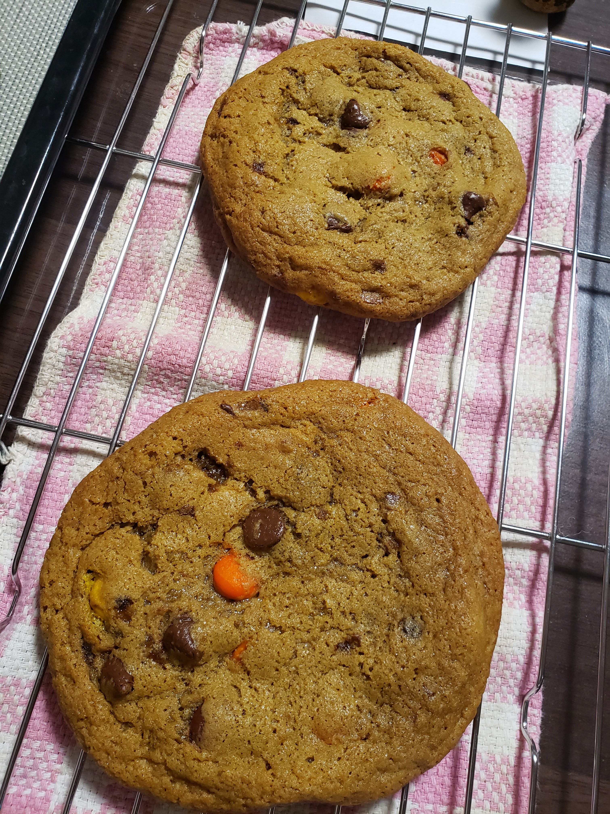

Giant M&M Cookies

Description
Ingredients
- 360g of all-purpose flour (中力粉)
- 1 teaspoon of baking soda
- 3/4 teaspoon of salt
- 240g of unsalted butter, softened to room temp
- 225g of brown sugar
- 200g of granulated sugar
- 2 large eggs
- 15ml of vanilla extract
- 378g of M&M's
Steps
- Whisk the flour, baking soda, and salt together in a medium bowl. Set aside.
- In a large bowl, using a handheld mixer or stand mixer, fitted with a paddle attachment, beat the butter on medium-high speed until smooth, about 1 minute.
- Add the brown sugar and granulated sugar, and beat on medium-high speed until creamed, about 2 minutes.
- Add the eggs and vanilla extract, and beat on high speed until combined, about 1 minute.
- Add the dry ingredients to the wet ingredients and mix on low speed until combined.
- With the mixer running on low speed, beat in the M&M's and oats.
The dough will be soft and thick.
- Cover and chill the dough in the refrigerator for at least 2 hours (and up to 4 days).
If chilling for more than 3 hours, allow to sit at room temp for at least 30 minutes before rolling and baking because the dough will be quite hard.
- Preheat the oven to 180 degrees C (160 if using a convection oven).
Line baking sheets with parchment paper or silicone baking mats.
Set aside.
- Scoop balls of dough, about 4 tablespoons (1/4 cup) of dough per cookie and place 4 inches (10 cm) apart on the baking sheets.
Bake for 15 to 17 minutes, or until lightly browned on the sides.
The centers will look a little soft.
- Remove from the oven and allow to cool on the baking sheets for 5 mintues before transferring to a wire rack to cool completely.
Return to Top Page